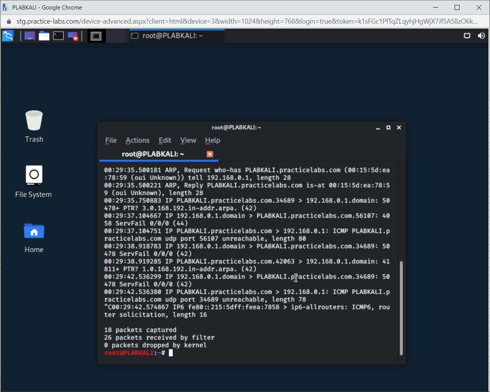
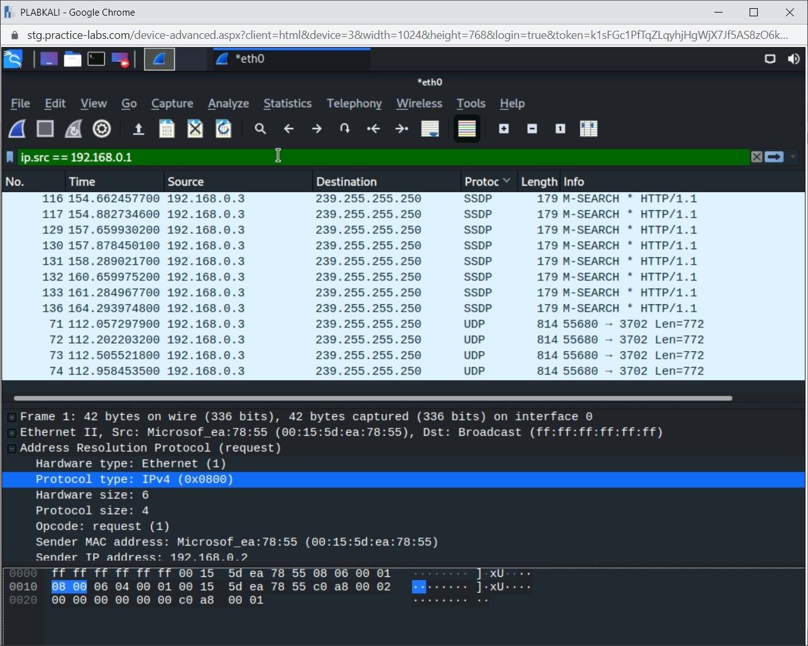
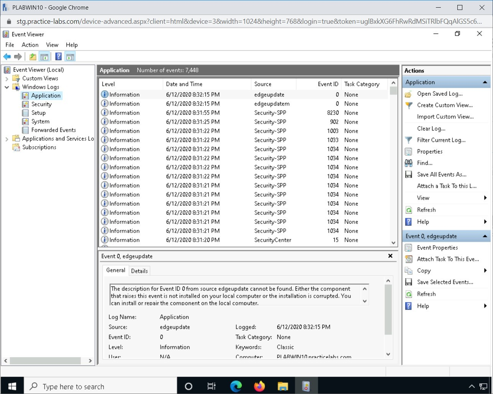
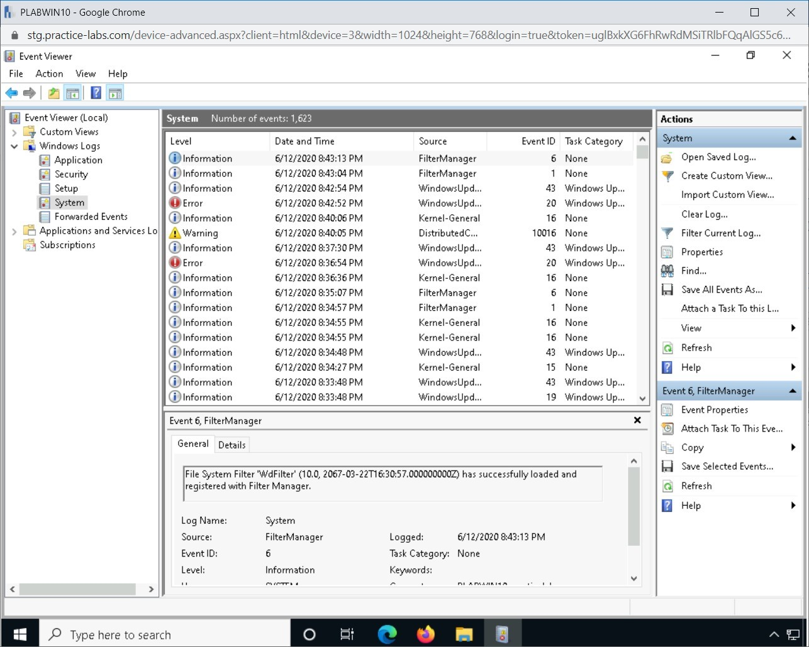

Introduction
bb1840e4-5425-49a3-9d75-477b8f016ff8
Welcome to the Incident Response Tools Practice Lab. In this module, you will be provided with the instructions and devices needed to develop your hands-on skills.
dc640c20-9434-45ea-b7c2-6d4d6a196bfc
Learning Outcomes
In this module, you will complete the following exercises:
- Exercise 1 - Configuring System Logging
- Exercise 2 - Using Tcpdump and Logging
- Exercise 3 - Capturing Packets with Wireshark
- Exercise 4 - Work with Logs in Windows
After completing this module, you should be able to:
- View the Syslog Daemon Configuration
- View the Configuration of Logrotate
- Check Boot Events in the Log Files
- Use Tcpdump
- Know the Key Locations for Logging
- Capture Traffic Information
- Analyze Captured Information
- Display Capture Information with Wireshark
- View Packet Capture Logs
- Access the Event Viewer Logs
- Enable Windows Defender Firewall Logs
After completing this module, you should have further knowledge of:
- NXLog
- Syslog-ng
- Log Retention
- Bandwidth Monitors
- Netflow Protocol
- Metadata Properties
- Security Information and Event Management (SIEM)
- Log Aggregation
- Event Trends
- Alerts
- Event Correlation
Exam Objectives
The following exam objectives are covered in this lab:
4.3 Given an incident, utilize appropriate data sources to support an investigation.
- Vulnerability Scan Output
- SIEM Dashboards
- Log Files
- Syslog/Rsyslog/Syslog-ng
- Journalctl
- Nxlog
- Retention
- Bandwidth Monitors
- Metadata
- Netflow/sflow
- Protocol Analyzer Output
Note: Our main
focus is to cover the practical, hands-on aspects of the exam
objectives. We recommend referring to course material or a search engine
to research theoretical topics in more detail.
Lab Duration
It will take approximately 1 hour to complete this lab.
c6fa62a3-1a00-4052-8104-258e8cbaa187
Help and Support
For more information on using Practice Labs, please see our Help and Support page. You can also raise a technical support ticket from this page.
Click Next to view the Lab topology used in this module.
d2c53300-f951-45a9-9aa4-3d4ecae69e11
Lab Topology
During your session, you will have access to the following lab configuration.
Depending on the exercises, you may or may not use all
of the devices, but they are shown here in the layout to get an overall
understanding of the topology of the lab.
- PLABDC01 - Windows Server 2019 (Domain Controller)
- PLABDM01 - Windows Server 2019 (Domain Member Server)
- PLABWIN10 - Windows 10 (Domain Member Workstation)
- PLABKALI - Kali 2019.4 (Stand-alone device)
Click Next to proceed to the first exercise.
<
Home |
README >
CompTIA Security+ Practice Labs
Exercise 1 - Configuring System Logging
Syslog is short for System Logging Protocol. Syslog is
a protocol responsible for sending events from one or more systems to a
single server, known as Syslog Server.
There are typically three key components:
- Syslog Forwarder: This is an agent that
collects the information from various devices and servers on the network
and forwards it to the Collector.
- Syslog Collector: Receives the information
from the Forwarder. The information can be received on the UDP or TCP
ports, depending on which ones are configured. The administrator can
filter the required information on a need basis.
- Syslog Analysis: Can be performed on the
collected information. There can be thousands of events generated from a
single device or system on the network. The administrator can filter
the events and figure out the ones that are worth paying attention to.
Syslog daemon is a program used for administering and
managing a system’s security and analyze debugging messages. All the
hardware devices run their syslog daemons. The output from all the
devices is logged into a central repository for further usage.
After completing this exercise, you should be able to review the syslog daemon configuration on a Linux system.
Learning Outcomes
After completing this exercise, you should be able to:
- View the Syslog Daemon Configuration
- View the Configuration of Logrotate
- Check Boot Events in the Log Files
Your Devices
You will be using the following device in this lab. Please power this on now.
- PLABKALI - Kali 2019.4 (Stand-alone device)

Task 1 - View the Syslog Daemon Configuration
A system needs to maintain log files. The core intent
of maintaining log files is to track messages about various system
components, such as the kernel, services, CPU, memory, security, and
applications.
Different log files can contain a different set of
messages, which can be of different varieties, like error or
information. The system administrator can use these logs to manage the
system.
In this task, you will configure the syslog (rsyslog) daemon.
Step 1
Connect to PLABKALI and sign in with the following credentials:
Username: root
Password: Passw0rd
Figure 1.1 Screenshot of PLABKALI: Displaying logging into the Kali device.
Step 2
On the desktop, right-click and select Open Terminal Here.
 Figure 1.2 Screenshot of PLABKALI: Selecting the Open Terminal Here option from the context menu.
Figure 1.2 Screenshot of PLABKALI: Selecting the Open Terminal Here option from the context menu.
Step 3
A daemon called rsyslogd can control the log files. The log messages maintained by rsyslogd are listed in the /etc/rsyslog.conf configuration file. It is important to note that this file contains the following sections:
- Modules - contains various configuration directives that are loaded when the module is loaded.
- Global directives - apply to the rsyslogd daemon and start with $. One line contains one global directive.
- Rules - defines the co-operation of selector
and action. A selector filters messages based on
facility and priority. An action defines what needs to be done
with the filtered messages.
- Templates - specify the format a user may need. You can also use them for dynamic file name generation.
- Filter conditions - can use one of the three
types of filter conditions: RainerScript-based filters, severity and
facility-based selectors, and property-based filters
- Output channels - defines the type of output a user wants
Each line contains three directives:
- Facility - is the message creator, for example, security or kernel
- Level - is the severity level
- Action - is the destination for the logged messages
To view the /etc/rsyslog.conf file, type the following command:
cat /etc/rsyslog.conf
Press Enter.
Figure 1.3 Screenshot of PLABKALI: Viewing the /etc/rsyslog.conf file.
Step 4
The /etc/rsyslog.conf file is now displayed.
Figure 1.4 Screenshot of PLABKALI: Viewing the contents of the /etc/rsyslog.conf file.
Step 5
Clear the screen by entering the following command:
clear
To view the loaded modules, type the following command:
grep ModLoad /etc/rsyslog.conf
Press Enter.
Notice that no lines contain the word ModLoad. Therefore, no response is returned.
Figure 1.5 Screenshot of PLABKALI: Viewing the loaded modules.
Step 6
You can also check for global directives. To check for a global directive marked with $, type the following command:
cat /etc/rsyslog.conf
Press Enter.
Scroll to the Global Directives section. Note that there are multiple global directives.
Note: You can similarly look for Rules etc. in this file.
Figure 1.6 Screenshot of PLABKALI: Viewing the /etc/rsyslog.conf file.
Step 7
Clear the screen by entering the following command:
clear
The syslog service comprises of two key processes: rsyslogd and klogd. The rsyslogd process is responsible for logging events from user processes. The klogd process is used for logging events from the kernel.
To make sure both the processes are running, type the following command:
ps ax | egrep -i "(syslogd|klogd)"
Press Enter.
You will see the status of both the processes.
Figure 1.7 Screenshot of PLABKALI: Verifying the status of the rsyslogd and klogd processes.
Task 2 - View the Configuration of Logrotate
The log files are by default contained in the /var/log directory. This directory contains various types of logs, such as boot.log, cron, and yum.log. The logs can grow to massive sizes and may become difficult to manage.
To resolve this problem, the logrotate daemon is
used. The logrotate daemon suffixes the current message file with
today's date, and a new log file is created the next day.
In this task, you will carry out the configuration of logrotate in Linux.
Step 1
Clear the screen by entering the following command:
clear
To view the log files in the /var/log directory, type the following command:
ls -l /var/log
Press Enter.
Figure 1.8 Screenshot of PLABKALI: Viewing the log files in the /var/log directory.
Step 2
Note that some files are marked with the older dates.
Figure 1.9 Screenshot of PLABKALI: Viewing the log files with the older dates.
Step 3
Clear the screen by entering the following command:
clear
The logrotate utility uses the configuration defined in the /etc/logrotate.conf file. To view this file, type the following command:
cat /etc/logrotate.conf
Press Enter.
Figure 1.10 Screenshot of PLABKALI: Viewing the /etc/logrotate.conf file.
Step 4
Note that the /etc/logrotate.conf file contains a few key parameters, such as:
- When to create
- What to do after rotating old log files
- The naming convention for the rotated log files
Figure 1.11 Screenshot of PLABKALI: Viewing the /etc/logrotate.conf file.
Step 5
Clear the screen by entering the following command:
clear
The logrotate file uses two key files:
- /usr/sbin/logrotate - This is the logrotate command.
- /etc/cron.daily/logrotate - This is a shell script that executes the logrotate command daily.
To view the /etc/cron.daily/logrotate shell script, type the following command:
cat /etc/cron.daily/logrotate
Press Enter.
Figure 1.12 Screenshot of PLABKALI: Viewing the /etc/cron.daily/logrotate shell script.
Step 6
Clear the screen by entering the following command:
clear
The /etc/logrotate.d file contains the log rotation information for the packages. This means that when you install a package in Linux, the log rotation information will be collected in this directory.
For example, you can view the log rotation information on the samba package.
To view the log rotation information for the samba package, type the following command:
cat /etc/logrotate.d/samba
Press Enter.
Figure 1.13 Screenshot of PLABKALI: Viewing the log rotation information for the sumba package.
Note: Viewing
the Samba package's log rotation configuration file gives an
administrator an overview of the specific activity that will be logged
for the specific package. This file can be modified depending on the
specific logging requirements for the package.
Step 7
Clear the screen by entering the following command:
clear
When you run the logrotate command, you can write the status with the help of the -s parameter.
To run the logrotate command, type the following command:
logrotate -s /var/log/logstatus /etc/logrotate.conf
Press Enter.
Logrotate messages are written to the /var/log/logstatus file.
Whenever you need log rotation for specific files, you will need to
prepare the logrotate configuration and manually run the logrotate
command.
Figure 1.14 Screenshot of PLABKALI: Executing the logrotate command.
Step 8
You can also add customized messages into a system log using the logger utility. To add a custom message, type the following command:
logger -i -p mail.err "Error Message"
Press Enter.
This will log "Error Message" to the /var/log/mail.err file with the process ID, user account, and the time stamp for the error message.
Note: You can use the man logger command to get more help on this command.
Figure 1.15 Screenshot of PLABKALI: Enabling the logging of Error Messages to the /var/log/mail.err file.
Step 9
Clear the screen by entering the following command:
clear
To log the system reboot message, type the following command:
logger System reboot
Press Enter.
Figure 1.16 Screenshot of PLABKALI: Logging the system reboot messages.
Step 10
The syslog command is now replaced with the journal command, which stores similar information to syslog.
The /etc/systemd/journald.conf file contains the configuration settings for journald. To view the journald configuration file, type the following command:
cat /etc/systemd/journald.conf
Press Enter.
Figure 1.17 Screenshot of PLABKALI: Viewing the contents of the /etc/systemd/journald.conf file.
Step 11
You can run the journalctl command to get messages from the /var/log/ directory. By default, the journalctl command provides unfiltered messages, but you can use various filters to filter messages.
To run journalctl, type the following command:
journalctl
Press Enter.
Note: Keep pressing Enter to display subsequent logs.
Figure 1.18 Screenshot of PLABKALI: Executing the journalctl command to view the logs.
Note: The
journalctl command is used on a Linux system to display the collected
system logs. These logs can be used to review the events that occurred
on the system.
Step 12
Press the following to quit the display and reach the command prompt:
q
Figure 1.19 Screenshot of PLABKALI: Quitting the journalctl command.
Step 13
Clear the screen by entering the following command:
clear
To view the boot message logs, type the following command:
journalctl -b
Press Enter.
Figure 1.20 Screenshot of PLABKALI: Displaying the boot messages in the logs using the journalctl command.
Note: Keep pressing Enter to view subsequent logs.
Step 14
Press the following to quit the display and reach the command prompt:
q
Figure 1.21 Screenshot of PLABKALI: Quitting the journalctl command.
Step 15
Clear the screen by entering the following command:
clear
Now, let's view the logs filtered based on priority. To do that, type the following command:
journalctl -p crit
Press Enter. The -p crit parameter will filter the logs based on the critical priority.
The logs are filtered based on the critical priority. Note that there are no critical entries.
Press the following to quit the display and reach the command prompt:
q
Figure 1.22 Screenshot of PLABKALI: Showing the logs based on the critical priority.
Note: The journalctl command
with the specific parameters displays critical events that have
occurred on the system and can be used by an administrator to remediate
any issues.
Step 16
To view logs by timestamp, type the following command:
journalctl --since=2020-05-05
Press Enter.
Keep pressing Enter to display subsequent logs since May 5th, 2020.
Figure 1.23 Screenshot of PLABKALI: Showing the logs from a specific period.
Step 17
Press the following to quit the display and reach the command prompt:
q
Figure 1.24 Screenshot of PLABKALI: Quitting the journalctl command.
Note: The log
files for the specific start date are displayed. An administrator can
display log files for a specific time period for investigation purposes
Task 3 - Check Boot Events in the Log Files
Just like a Windows system, a Linux system also generates log files, which are stored in the /var/log/ directory. You will find several subdirectories and log files when you navigate to the /var/log directory.
It is important to note that several of the
below-listed files and subdirectories may or may not be present in your
Linux system. This is because these log files are dependent on the
services and applications being used.
The key subdirectories and files in the /var/log/ directory are:
- /var/log/messages: general log messages
- /var/log/boot: system boot log messages
- /var/log/debug: debugging log messages
- /var/log/auth.log: authentication logs messages
- /var/log/daemon.log: services messages
- /var/log/dmesg: Linux kernel ring buffer log messages
- /var/log/dpkg.log: binary package log
- /var/log/faillog: failed login messages
- /var/log/kern.log: kernel messages
- /var/log/lpr.log: printer messages
- /var/log/mail.*: messaging server messages
- /var/log/mysql.*: MySQL server messages
- /var/log/user.log: userlevel logs messages
- /var/log/xorg.0.log: X.org messages
- /var/log/apache2/*: Apache Webserver messages
- /var/log/lighttpd/*: Lighttpd Webserver messages
- /var/log/fsck/*: fsck messages
- /var/log/apport.log: application crash messages
It is important to note that all directories and
files may not exist in every Linux system. Several of them are
application-specific directories and files. It also depends on the
applications and services that are running on the system. For example,
this directory can contain the logs for the following:
- Network
- System
- Application
- Security
- Web
- DNS
- Authentication
Just like /var/log directory in Linux, Windows
tracks all logs using the Event Manager application. However, each
application may generate its own logs. For example, the IIS log files
are contained in the %SystemDrive%\inetpub\logs\LogFiles directory. The SystemDrive variable is the name of the drive where the operating system is installed.
In this task, you will view the boot events.
Step 1
Ensure you are connected to the PLABKALI device.
Clear the screen by entering the following command:
clear
To view the boot events, type the following command:
journalctl -b
Press Enter.
Figure 1.25 Screenshot of PLABKALI: Viewing the boot events.
Note: The journalctl -b command
displays the log files collected for all boot events on the system.
This can be used by an administrator to identify possible security
events.
Step 2
The output of the journalctl command is displayed.
Press the following to quit the display and to reach the command prompt:
q
Figure 1.26 Screenshot of PLABKALI: Showing the output of the journalctl command.
Step 3
Clear the screen by entering the following command:
clear
To view the details that were logged for all the boot events, type the following command:
journalctl --list-boots
Press Enter.
Note: The output of this command may differ in your lab environment.
 Figure 1.27 Screenshot of PLABKALI: Viewing the details that were logged during a previous boot.
Figure 1.27 Screenshot of PLABKALI: Viewing the details that were logged during a previous boot.
Step 4
To view the details of a specific boot log with the
journalctl --list boots command, highlight the first line and
right-click. Select Copy Selection
Figure 1.28 Screenshot of PLABKALI: Displaying selecting the first boot event.
Step 5
Press the following to quit the display and return to the command prompt:
q
Figure 1.29 Screenshot of PLABKALI: Displaying returning to the command prompt.
Step 6
To view the log file for the selected event type the following:
journalctl --boot=
Right-click in the command prompt and select Paste Selection
Figure
1.30 Screenshot of PLABKALI: Showing the paste being selected to view
the details of a specific boot log with the journalctl --list boots
command.
Step 7
Press Enter.
Figure 1.31 Screenshot of PLABKALI: Displaying executing the journalctl command.
Step 8
The output of this command is displayed.
Press the following to quit the display and reach the command prompt:
q
Figure 1.32 Screenshot of PLABKALI: Showing the output of a specific boot event.
Note: The information for the boot event is displayed. This can be used to investigate possible security events by an administrator.
Step 9
Clear the screen by entering the following command:
clear
To view the events in the kernel log, which stores the booting events, type the following command:
cat /var/log/syslog
Press Enter.
Figure 1.33 Screenshot of PLABKALI: Viewing the events in the kernel log.
Step 10
The output of this command is displayed.
Figure 1.34 Screenshot of PLABKALI: Listing the events in the kernel log.
Note: The
executed command displays the boot events specifically related to the
system. This is a global overview of the occurrences on the system.
Step 11
Clear the screen by entering the following command:
clear
You can also view the dmesg log to obtain information about the system hardware. The dmesg can be useful when you are trying to troubleshoot a system hardware issue.
To view the dmesg log, type the following command:
dmesg
Press Enter.
Figure 1.35 Screenshot of PLABKALI: Executing the dmesg command.
Step 12
The output of this command is displayed.
Figure 1.36 Screenshot of PLABKALI: Showing the output of the dmesg command.
Note: An administrator can use this command to troubleshoot specific hardware related issues.
Step 13
To find out the amount of physical memory in a system, type the following command:
dmesg | grep -i memory
Press Enter.
80e3ace3-3818-477e-9d50-9fdfea66eb75
Figure 1.37 Screenshot of PLABKALI: Finding out the amount of physical memory in a system.
Close the terminal window.
<
Home |
README >
CompTIA Security+ Practice Labs
Exercise 2 - Using Tcpdump and Logging
Tcpdump is a tool that can be used for packet
analysis. Using this tool, you can capture packets that traverse through
a network, and after capturing the packets, you can investigate and
analyze them.
Tcpdump can be used not only for packet analysis but also for troubleshooting various network issues.
In this exercise, you will learn to use tcpdump.
Learning Outcomes
After completing this exercise, you should be able to:
- Use Tcpdump
- Know the Key Locations for Logging
Your Devices
You will be using the following devices in this lab. Please power these on now.
- PLABDC01 - Windows Server 2019 (Domain Controller)
- PLABKALI - Kali 2019.4 (Stand-alone device)
Task 1 - Use Tcpdump
There are a variety of tasks that can be performed
with tcpdump. You can capture packets through one network adapter or
multiple network adapters if installed in the system. The packet
capturing can be done in real-time as the traffic flows through the
network. After capturing the traffic, it can be analyzed for various
reasons, such as troubleshooting the network traffic.
In this task, you will use tcpdump, which is made available in Kali Linux.
Step 1
Ensure that you have powered on the required devices. Connect to PLABKALI.
Note: Log on to Kali if you are not logged in, using the same credentials shown in Exercise 1, Task 1, Step 1.
Figure 2.1 Screenshot of PLABKALI: Showing the PLABKALI desktop.
Step 2
In the left-hand pane, click the Terminal Emulator icon.
 Figure 2.2 Screenshot of PLABKALI: Clicking on the Terminal icon in the application bar.
Figure 2.2 Screenshot of PLABKALI: Clicking on the Terminal icon in the application bar.
Step 3
The Terminal window is displayed. Using the tcpdump command, you can capture packets using a specific interface. For example, if the system has eth0 as the interface, you can use it for capturing packets.
Type the following command:
tcpdump -i eth0
Press Enter.
Note: The -i parameter
is used for specifying the interface. Let the command run for a few
minutes. It may take a few minutes before you receive a reply.
Figure 2.3 Screenshot of PLABKALI: Entering the tcpdump command.
Step 4
This command continues to run unless you break it by pressing the Ctrl + C keys.
Figure 2.4 Screenshot of PLABKALI: Showing the output of the tcpdump command.
Step 5
Clear the screen by entering the following command:
clear
Instead of running the command continuously, you can
run the command a specific number of times. To do this, type the
following command:
tcpdump -c 10 -i eth0
Press Enter.
Note: The -c parameter is used for specifying the packet count.
Figure 2.5 Screenshot of PLABKALI: Entering the tcpdump command.
Step 6
The command captures the packets for the specified number of times.
Figure 2.6 Screenshot of PLABKALI: Showing the output of the tcpdump command.
Step 7
Clear the screen by entering the following command:
clear
You can also list the available interfaces in your system with tcpdump. To do this, type the following command:
tcpdump -D
Press Enter.
Figure 2.7 Screenshot of PLABKALI: Entering the tcpdump command.
Step 8
The list of available interfaces is displayed.
Figure 2.8 Screenshot of PLABKALI: Showing the output of the tcpdump command.
Step 9
Clear the screen by entering the following command:
clear
You can save the output of the tcpdump command in a file with the .pcap extension. To do this, type the following command:
tcpdump -w plab.pcap -i eth0
Press Enter.
Note: Let the command run for a few minutes.
Figure 2.9 Screenshot of PLABKALI: Entering the tcpdump command.
Step 10
This command continues to run unless you break it by pressing the Ctrl + C keys.
Figure 2.10 Screenshot of PLABKALI: Showing the output of the tcpdump command.
Step 11
After you have sent the output to a file, you can read it with the -r parameter. To do this, type the following command:
tcpdump -r plab.pcap
Press Enter.
Figure 2.11 Screenshot of PLABKALI: Entering the tcpdump command.
Step 12
Notice that the output from the file is displayed on the screen.
Figure 2.12 Screenshot of PLABKALI: Showing the output of the tcpdump command.
Step 13
Clear the screen by entering the following command:
clear
Rather than using a specific interface, you can
capture packets using all available interfaces. To do this, type the
following command:
tcpdump -i any
Press Enter.
Note: Let the command run for a few minutes.
Figure 2.13 Screenshot of PLABKALI: Entering the tcpdump command.
Step 14
This command continues to run unless you break it by pressing the Ctrl + C keys.
Figure 2.14 Screenshot of PLABKALI: Showing the output of the tcpdump command.
Step 15
Clear the screen by entering the following command:
clear
By default, tcpdump captures all types of packets,
but you can limit it to capture only a specific type of protocol
packets. To do this, type the following command:
tcpdump -i any icmp
Press Enter.
Note: Let the command run for a few minutes.
Figure 2.15 Screenshot of PLABKALI: Entering the tcpdump command.
Step 16
Open a new terminal window and type the following command:
ping 192.168.0.1
Press Enter.
Figure 2.16 Screenshot of PLABKALI: Ping another system from a different terminal.
Step 17
After a few pings, break the command by pressing the Ctrl + C keys. Then, close the terminal window.
Figure 2.17 Screenshot of PLABKALI: Showing the output of the ping command.
Step 18
Notice that these commands are captured by tcpdump.
Figure 2.18 Screenshot of PLABKALI: Showing the output of the tcpdump command.
Close the terminal window.
Task 2 - Know the Key Locations for Logging
Logs are meant for recording events in a system. In
the case of an event, you can refer to the respective log for more
details. The /var/log directory holds all types of log files. It
is important to note that the number of logs in each system will differ
because of the installed applications.
For example, if a system has MySQL installed, this directory will have a log about the MySQL application. On the other hand, a system that does not have MySQL will not have this log generated.
In this task, you will test the Apache Web Server traffic.
Step 1
Open a new terminal window by click the Terminal Emulator icon on the left-hand pane.
Let’s first list the number of logs in the /var/log directory. Type the following command:
ls -l /var/log/
Press Enter.
Figure 2.19 Screenshot of PLABKALI: Listing the number of logs in the /var/log directory.
Step 2
Clear the screen by entering the following command:
clear
To view a log file, you can use the cat command. Type the following command:
cat /var/log/user.log
Press Enter.
Figure 2.20 Screenshot of PLABKALI: Viewing a log file using the cat command.
80e3ace3-3818-477e-9d50-9fdfea66eb75
Close the terminal window.
<
Home |
README >
CompTIA Security+ Practice Labs
Exercise 3 - Capturing Packets with Wireshark
There are various methods that you can use to capture
network traffic. One of the methods is to connect with the target
system and get the information. The other method is to simply capture
the traffic from the network and analyze it for useful information.
Depending on your need, you can analyze the traffic
accordingly. You can filter the traffic based on ports, IP addresses,
and so on. Wireshark is one such tool that helps you capture the
network traffic. It also allows you to save the traffic in files, which
can be used for offline analysis.
In this exercise, you will learn to capture packets with Wireshark.
Learning Outcomes
After completing this exercise, you should be able to:
- Capture Traffic Information
- View Packet Capture Logs
- Display Capture Information with Wireshark
Your Devices
You will be using the following devices in this lab. Please power these on now.
- PLABDC01 - Windows Server 2019 (Domain Controller)
- PLABDM01 - Windows Server 2019 (Domain Member Server)
- PLABWIN10 - Windows 10 (Domain Member Workstation)
- PLABKALI - Kali 2019.4 (Stand-alone device)

Task 1 - Capture Traffic Information
Initially, you will be using Wireshark to view traffic information from devices on the network. When you select an interface, such as Ethernet or eth0 in Wireshark,
it activates it to capture the traffic instantly. Once the traffic has
been captured, you can use various in-built filters to filter out the
traffic as per your requirement. For example, you can filter only the
DNS or TCP traffic.
In this task, you will learn to capture traffic information using Wireshark. To do this, perform the following steps:
Step 1
Ensure that all devices have been powered on and are running.
Connect to PLABKALI. The desktop should be displayed.
Figure 3.1 Screenshot of PLABKALI: Showing the desktop of PLABKALI.
Step 2
On the upper left corner, click the Kali icon, then click 09 - Sniffing & Spoofing and then click wireshark.
Figure 3.2 Screenshot of PLABKALI: Selecting Wireshark to run.
Step 3
The Wireshark Network Analyzer window is displayed. Under Capture, double-click eth0.
Figure 3.3 Screenshot of PLABKALI: Selecting the Ethernet adapter.
Step 4
The packet capturing process starts. Leave the
capture running for a minute to collect information flowing across the
networking devices.
Figure 3.4 Screenshot of PLABKALI: Showing the captured packets.
Step 5
Connect to PLABWIN10 from the toolbar and click Reboot. Alternatively, you can log into that device and restart it from there.
Alert: Do not use the Reset option on the platform to restart Windows.
Step 6
Connect to PLABKALI and observe the packet capture window while PLABWIN10 boots. You will see ARP data and TCP traffic, but you want to look for the ARP requests when PLABWIN10 starts. Bear in mind the IP for this device is listed in the diagram above, and you will need to look for that address.
Once the device has rebooted successfully, you can end the packet capture process in Wireshark by pressing the Red Square button at the top left-hand side.
Figure 3.5 Screenshot of PLABKALI: Clicking the red square to stop packet capturing.
Step 7
Once the packet capture has ended, you should see the Red Square has turned to Grey.
Figure 3.6 Screenshot of PLABKALI: Showing Wireshark capture in a stopped state.
Step 8
Either you can scroll back up and manually locate the arp packets, or you can filter them. Let’s filter them for this task.
In the Apply a display filter text box, type the following:
arp
Press Enter.
Notice that several arp packets have been captured. One from PLABWIN10 is highlighted.
Figure 3.7 Screenshot of PLABKALI: Entering the command to filter the packets.
Step 9
Click on x in the red square to remove the filter.
Figure 3.8 Screenshot of PLABKALI: Showing the filtered packets.
Task 2 - Analyzing Captured Information
You can list information according to different tabs
and then move it into basic filtering techniques. Knowledge of protocols
is essential to understanding all the information in Wireshark.
When you start capturing packets using Wireshark, it
may capture thousands of packets within a few minutes. It is not easy to
analyze thousands of packets at one go. Manual analysis may take
several hours to locate specific types of packets. The easier method is
to use filtering, which is a feature provided by Wireshark.
In this task, you will explore the details of traffic flows and how to understand them using the main interface.
Step 1
Connect to PLABKALI. Now let’s explore some of the interface and options you have in Wireshark.
First, notice the display options:
- No - Packet Number which is counted for each packet recorded
- Time - Time of the packet recording
- Source - Source IP address
- Destination - Destination IP address
- Protocol - Which type of protocol has been used
- Length - Length of the Packet
- Info - Any extra information which could be useful
First, click on the Protocol column header to
list the information by type. That will list the ARP protocols first,
and you can then discover devices making requests for information by
checking the Info tab.
Figure 3.9 Screenshot of PLABKALI: Clicking the Protocol column header.
Step 2
Notice that the captured packets are now sorted based on their protocol names.
Figure 3.10 Screenshot of PLABKALI: Showing the sorted packets based on their protocols.
Step 3
You need to scroll through the details to find the
results of the ARP sessions. From this method, all the communicating
devices that are calling out to check each other’s IP addresses, you
learn that all the addresses listed for all switched on devices that are
connected to the same Ethernet adapter.
You can see calls for 192.168.0.3, which is the PLABWIN10 asking for information about who has 192.168.0.1, which is the PLABDC01 server.
You also see devices establishing their addresses. For example, 192.168.0.3, the PLABWIN10 system, confirms its address location at 00:15:5d:ea:78:57. This information is mentioned in the middle frame.
Figure 3.11 Screenshot of PLABKALI: Displaying the ARP information in Wireshark.
Step 4
Search for PLABWIN10, which is the device you rebooted.
Figure 3.12 Screenshot of PLABKALI: Displaying the ARP protocol and information related to the captured packet in Wireshark.
Step 5
Its frame can be seen making a Gratuitous Request via a Broadcast, effectively setting its source and destination address information against its IP.
If another machine did own 192.168.0.3, PLABWIN10 would detect a duplicate IP address and prompt the user to change the configuration.
Wireshark decodes the OUI, and that you can expand the MAC fields to decode the multicast/broadcast bit and a locally administered bit.
The ARP headers (layer 2.5 or 3-ish) contain similar
information, plus the sender and target IP addresses. ARP is a very
simple protocol. IP and higher-level packets often contain many more
headers.
Also, note the bottom frame. This contains the raw
data in a hexadecimal format (the computers receive it as a series of 1s
and 0s. When you select information in pane 2, the relevant hex digits
are selected here (and vice versa).
Figure 3.13 Screenshot of PLABKALI: Showing the packet information in the hexadecimal form.
Step 6
Type the following in the filter bar:
ip.src == 192.168.0.2
Press Enter.
Figure 3.14 Screenshot of PLABKALI: Displaying the filtering for an IP.
Step 7
You can view all the traffic which has flowed from PLABDM01 since the recording began.
Figure 3.15 Screenshot of PLABKALI: Showing the filtered packets for a specific IP address.
Step 8
Click on x in the red square to remove the filter.
Figure 3.16 Screenshot of PLABKALI: Clearing the Filter Wireshark DNS information.
Task 3 - Display Capture Information with Wireshark
Wireshark captures many packets from the
network, and therefore, all this information can be difficult to manage
and interpret. There are several handy features in Wireshark. For
example, you can select the network interface that you want to use for
capturing network packets.
Wireshark is not the only tool for capturing network
packets. Tools, such as Tcpdump and WinDump, also perform the same
function. However, Wireshark has the capability to open the files that
have been saved in Tcpdump and WinDump.
You can also use other features like protocol hierarchy to view a protocol and its hierarchy structure.
You can explore the captured packets using various tools that are provided within Wireshark.
In this task, you will learn to use the tools provided by Wireshark.
Step 1
Ensure you are connected to PLABKALI.
Ensuring the filter has been cleared of contents, you
are now back on the original capture information. You will now analyze
the data in a more summary output.
Click the Statistics menu option and then select Resolved Addresses.
Figure
3.17 Screenshot of PLABKALI: Resolving IP Addresses by selecting the
Statistics tab and then selecting Resolved Addresses.
Step 2
Hosts with their addresses resolved from an IP to their names will be listed in the initial section. You can identify PLABWIN10 from this list by looking at the information available for the device on the lab topology.
Note: There may be a slight delay in name resolution, and therefore, the Hosts section may be blank.
Click the x button on the upper right-hand corner.
Figure 3.18 Screenshot of PLABKALI: Displaying the Resolved Addresses dialog box. OK is selected.
Step 3
Click the Statistics menu option again and select Protocol Hierarchy.
Figure 3.19 Screenshot of PLABKALI: Selecting the Statistics option and then selecting Protocol Hierarchy.
Step 4
The output shows the details of packet types and how much information flowed in each protocol type.
Figure 3.20 Screenshot of PLABKALI: Displaying the Protocol Hierarchy.
Step 5
For example, if you were interested in TCP traffic packets only, select that from the list, noted as Internet Protocol Version 4.
Right-click the line and select Apply as Filter, then Selected.
Figure
3.21 Screenshot of PLABKALI: Applying the Internet Protocol Version 4
Filter in Protocol Hierarchy. Apply as the filter has been clicked, then
Selected has been chosen.
Step 6
Click Close.
Figure 3.22 Screenshot of PLABKALI: Clicking the Close button.
Step 7
You are back on the Wireshark main screen. Above, you see the ip protocol being applied as a filter, informing Wireshark to display those packets in the Capture window.
Figure 3.23 Screenshot of PLABKALI: Displaying the applied ip filter.
Step 8
To discover any devices communicating directly, let’s clear this filter again.
Click the Statistics menu option and then select Conversations.
Figure 3.24 Screenshot of PLABKALI: Selecting the Statistics option and then selecting Conversations.
Step 9
In the Wireshark - Conversations dialog box, select the UDP.22 tab.
Note: There is a possibility that you may have different captures and results. Therefore, the tabs will be different.
Figure 3.25 Screenshot of PLABKALI: Displaying TCP conversations.
Step 10
Whether or not being used, a network device continues to communicate with the other devices.
Press ESC to close the window.
Figure 3.26 Screenshot of PLABKALI: Clicking Close on the Wireshark - Conversations dialog box.
Step 11
Finally, you will look at some graphical information regarding this capture.
Click the Statistics menu option, and then select I/O Graph.
Figure 3.27 Screenshot of PLABKALI: Selecting the Statistics option and then selecting I/O Graph.
Step 12
The graph in this image shows a single graph with two
different data points. The first one is about all packets, which is
shown as a line graph. The second one is TCP errors, which is shown as a
bar graph.
Figure 3.28 Screenshot of PLABKALI: Displaying Wireshark I/O Graphs.
Step 13
Let’s view only the All packets traffic in the graph.
De-select the TCP error filter. There is a minor change in the graph output. This is because there are either no or very few TCP errors.
Click Close.
Figure
3.29 Screenshot of PLABKALI: Displaying Wireshark IO graphs for All
Packets. The TCP errors checkbox has been de-selected and then clicking
Close.
Task 4 - View Packet Capture Logs
You can either do an online review in Wireshark,
which means that as the packets are captured, you can review them or
save the captured packets for an offline review. There is no point in
capturing packets if they are not viewed. You have to analyze the
packets for various reasons, such as troubleshooting a network issue or
verifying anomalies in the network traffic. You can also capture the
packets and save them in a file for analysis later.
In this task, you will view packet capture logs.
Step 1
Connect to PLABKALI.
Click File and then select Save As.
Figure 3.30 Screenshot of PLABKALI: Saving a file in Wireshark. File and Save As are selected.
Step 2
Wireshark, by default, saves the format as pcapng. However, you might need to change the file type for other programs like tcpdump to view the contents. If you click on Save as type, a list of types can be considered for saving the file.
Figure 3.31 Screenshot of PLABKALI: Confirming the output type. The Save as type dropdown is visible.
Step 3
For this task, you can use the default format, which is pcapng.
You need to give the file a name and save it to the Documents folder. Double click the Documents folder.
Enter the following as the File name:
PLABnetworkcapture01
Click Save.
Figure 3.32 Screenshot of PLABKALI: Naming the capture file. Save is selected.
Notice on the top of the Wireshark window. The name of the window is now changed to PLABnetworkcapture01.pcpng.
80e3ace3-3818-477e-9d50-9fdfea66eb75
Close all open windows.
<
Home |
README >
CompTIA Security+ Practice Labs
Exercise 4 - Work with Logs in Windows
Each application and the operating system generates
various types of events. These events are captured in logs maintained by
a tool or service within an operating system. The logs are handy in a
situation where you need to determine the cause or origin of an event.
Such a requirement may come up in a forensic investigation.
In this exercise, you will learn about various types of logs.
Learning Outcomes
After completing this exercise, you should be able to:
- Access the Event Viewer Logs
- Enable Windows Defender Firewall Logs
After completing this exercise, you should have further knowledge of:
- NXLog
- Syslog-ng
- Log Retention
- Bandwidth Monitors
- Netflow Protocol
- Metadata Properties
- Security Information and Event Management (SIEM)
- Log Aggregation
- Event Trends
- Alerts
- Event Correlation
Your Devices
You will be using the following devices in this lab. Please power these on now.
- PLABDC01 - Windows Server 2019 (Domain Controller)
- PLABWIN10 - Windows 10 (Domain Member Workstation)

Task 1 - Access the Event Viewer Logs
The Event Viewer is a Windows system tool that
displays information about various events happening on your computer.
This tool can help to track the event flow while troubleshooting any
issues either with the OS or the installed applications. The Event Log service starts as soon as you start Windows.
There are different types of event logs, such as application logs, system logs, and security logs. Application and System logs are available to all users. However, security logs are available only to the administrators.
In this task, you will access application logs on the system.
Step 1
Ensure that the required devices are powered on. Connect to PLABWIN10. The Windows desktop is displayed.
Figure 4.1 Screenshot of PLABWIN10: Showing the Windows desktop.
Step 2
Right-click Start and select Event Viewer.
 Figure 4.2 Screenshot of PLABWIN10: Right-clicking Start and selecting Event Viewer.
Figure 4.2 Screenshot of PLABWIN10: Right-clicking Start and selecting Event Viewer.
Step 3
The Event Viewer console is displayed. There are different types of logs:
- Application: Contains the events that are generated by applications
- Security: Contains security-related events generated by the operating system
- Setup: Contains the application installation-related events
- System: Contains the events generated by the operating system
In the left-hand pane, expand the Windows Logs node, and then select the Application log.
Figure 4.3 Screenshot of PLABWIN10: Showing the Application logs in the middle pane.
Step 4
Notice that various events relevant to the
applications on the system are listed in the middle pane. You can have
events that are labeled as Information, Warning, and Error.
 Figure 4.4 Screenshot of PLABWIN10: Showing the Application logs in the middle pane.
Figure 4.4 Screenshot of PLABWIN10: Showing the Application logs in the middle pane.
Step 5
Click System in the left-hand pane. Notice that there are different types of events listed.
Note: In your lab environment, there may be a possibility that all of these may not be listed.
Figure 4.5 Screenshot of PLABWIN10: Showing the System logs in the middle pane.
Step 6
Select an event in the middle pane. If your lab
environment displays an error event, select it. Notice that the bottom
section of the middle pane displays the details of the Error event.
The following information related to an event is displayed:
- Date and time
- User
- Computer
- Event ID
- Source
- Type
- Log name
 Figure 4.6 Screenshot of PLABWIN10: Showing the details of a selected event.
Figure 4.6 Screenshot of PLABWIN10: Showing the details of a selected event.
Step 7
Notice that the Windows Logs node displays
different types of logs. It is important to note that these are static
logs on all Windows systems. However, a server with specific services,
such as a DNS server, can have DNS logs as well. Such logs are listed
under the Applications and Services Logs node.
Expand Applications and Services Logs. Notice that these logs are specific to applications.
 Figure 4.7 Screenshot of PLABWIN10: Showing the Applications and Services related logs in the middle pane.
Figure 4.7 Screenshot of PLABWIN10: Showing the Applications and Services related logs in the middle pane.
Close all open windows.
Task 2 - Enable Windows Defender Firewall Logs
Windows Firewall, by default, does not have logging
enabled. You need to enable logging to generate the logs, which can be
helpful in various activities. For example, you may have added a new
rule and want to test it out. Once you test it out, an event is logged
in the logs. By reviewing the log, you can determine the outcome of the
newly added rule. By enabling the logs, you can also track malicious
activities. The default size limit of log is 4 MB.
In this task, you will learn to work with the Windows Defender Firewall logs.
Step 1
Ensure that the required devices are powered on. Connect to PLABWIN10. The Windows desktop is displayed.
Figure 4.8 Screenshot of PLABWIN10: Showing the Windows desktop.
Step 2
If Windows Defender Firewall has logging enabled, its events will be stored in the %windir%\system32\logfiles\firewall\ directory. The default name for the log is pfirewall.log. If this \firewall directory within the logfiles directory does not exist, then it means that logging is not enabled.
To verify the existence of the \firewall directory, right-click Start and then select Run.
 Figure 4.9 Screenshot of PLABWIN10: Right-clicking Start and selecting Run.
Figure 4.9 Screenshot of PLABWIN10: Right-clicking Start and selecting Run.
Step 3
In the Open textbox, type the following path:
%windir%/system32/logfiles
Press Enter.
Note: You can
either use the direct path, which means c:\windows or the drive where
you have installed Windows. Alternatively, you can use the variable,
which is %windir%, which will automatically open the Windows directory,
wherever it is present.
 Figure 4.10 Screenshot of PLABWIN10: Entering the path in the Open text box on the Run dialog box.
Figure 4.10 Screenshot of PLABWIN10: Entering the path in the Open text box on the Run dialog box.
Step 4
Notice that the Firewall directory does not exist. Close the File Explorer window.
 Figure 4.11 Screenshot of PLABWIN10: Showing the directories within the LogFiles directory.
Figure 4.11 Screenshot of PLABWIN10: Showing the directories within the LogFiles directory.
Step 5
In the Type here to search textbox, type the following:
Windows Firewall
From the search results, select Windows Defender Firewall.
 Figure 4.12 Screenshot of PLABWIN10: Selecting Windows Defender Firewall from the search results.
Figure 4.12 Screenshot of PLABWIN10: Selecting Windows Defender Firewall from the search results.
Step 6
In the left-hand pane of the Windows Defender Firewall window, click Advanced settings.
Figure 4.13 Screenshot of PLABWIN10: Clicking Advanced Settings in the Windows Defender Firewall window.
Step 7
The Windows Defender Firewall with Advanced Security window is displayed. In the right-hand pane, under Actions, click Properties.
 Figure 4.14 Screenshot of PLABWIN10: Clicking Properties in the Actions pane.
Figure 4.14 Screenshot of PLABWIN10: Clicking Properties in the Actions pane.
Step 8
The Windows Defender Firewall with Advanced Security on Local Computer dialog box is displayed. By default, the Domain Profile tab is opened. In the Logging section, click Customize.
Figure
4.15 Screenshot of PLABWIN10: Clicking Customize on the Windows
Defender Firewall with Advanced Security on Local Computer dialog box.
Step 9
The Customize Logging Settings for the Domain Profile dialog box is displayed. In the Log dropped packets drop-down, select Yes.
 Figure 4.16 Screenshot of PLABWIN10: Selecting Yes from the Log dropped packets drop-down list.
Figure 4.16 Screenshot of PLABWIN10: Selecting Yes from the Log dropped packets drop-down list.
Step 10
In the Log successful connections drop-down, select Yes and click OK.
Figure 4.17 Screenshot of PLABWIN10: Selecting Yes from the Log successful connections drop-down list and clicking OK.
Step 11
Click OK to close the Windows Defender Firewall with Advanced Security on Local Computer.
 Figure
4.18 Screenshot of PLABWIN10: Clicking OK to close the Windows Defender
Firewall with Advanced Security on Local Computer.
Figure
4.18 Screenshot of PLABWIN10: Clicking OK to close the Windows Defender
Firewall with Advanced Security on Local Computer.
Step 12
Close the Windows Defender Firewall with Advanced Security window.
 Figure 4.19 Screenshot of PLABWIN10: Closing the Windows Defender Firewall with Advanced Security window.
Figure 4.19 Screenshot of PLABWIN10: Closing the Windows Defender Firewall with Advanced Security window.
Step 13
Close the Windows Defender Firewall window.
Figure 4.20 Screenshot of PLABWIN10: Closing the Windows Defender Firewall window.
Step 14
Right-click Start, point to Shut down or sign out and select Restart.
Figure 4.21 Screenshot of PLABWIN10: Right-clicking Start and selecting Restart from the context menu.
Step 15
Once PLABWIN10 has restarted, in the Type here to search textbox, type the following:
Notepad
From the given search results, right-click Notepad and select Run as administrator.
 Figure 4.22 Screenshot of PLABWIN10: Right-clicking Notepad and selecting Run as administrator from the context menu.
Figure 4.22 Screenshot of PLABWIN10: Right-clicking Notepad and selecting Run as administrator from the context menu.
Step 16
In the User Account Control dialog box, click Yes.
 Figure 4.23 Screenshot of PLABWIN10: Clicking Yes in the User Account Control dialog box.
Figure 4.23 Screenshot of PLABWIN10: Clicking Yes in the User Account Control dialog box.
Step 17
The Untitled - Notepad window is displayed. Click File and then select Open.
Figure 4.24 Screenshot of PLABWIN10: Clicking File and then selecting Open in the Notepad window.
Step 18
In the Open dialog box, navigate to the following path:
C:\Windows\System32\LogFiles
Notice that there is a Firewall directory that is created. Select the Firewall directory and click Open.
Figure 4.25 Screenshot of PLABWIN10: Selecting the Firewall directory and clicking Open.
Step 19
Ensure that you select All Files from the drop-down next to the File name textbox. Select pfirewall and click Open.
Figure
4.26 Screenshot of PLABWIN10: Ensuring All Files is selected from the
drop-down next to the File name textbox. Selecting pfirewall and
clicking Open.
Step 20
Notice that the pfirewall log file is now opened. It shows various events handled by the Windows Defender Firewall.
Figure 4.27 Screenshot of PLABWIN10: Showing the events handled by the Windows Defender Firewall.
a5adbee1-b3d4-422f-907b-2999d763f275
Close all open windows.
NXLog
A large network would have hundreds of network
devices along with servers. Each one of them generates events that need
to be managed and monitored. As the administrator, you may have to
perform several tasks on these events that have been logged. For
example, you may have to classify or correlate events. You may also have
to store these event logs in secure storage.
NXLog is a tool that can perform various tasks, such as:
- Classify events
- Correlate events
- Store events
- Forward events
- Filter events
- Pattern matching
- Logfile rotation
- Scheduling
NXLog can work with several protocols, such as TLS, SSL, TCP, and UDP. It can also accept event logs from various sources, such as:
- Syslog
- Windows
- JSON format
- Files
- Databases
Syslog-ng
Syslog-ng is a tool that is used for collecting logs in real-time from various sources. When collecting logs, Syslog-ng uses the SSL/TLS encryption
to secure the transmission of information. After the logs are
collected, they are stored in an encrypted and compressed log store.
It is also possible for Syslog-ng to send logs
to different tools if required. For example, if one department in your
organization needs logs for compliance purposes, Syslog-ng can send the
logs that are filtered and processed properly. It can also use the REST API for sharing data.
Log Retention
An organization must retain logs for a certain
period, although It depends on the type of operations that the
organization runs. If it is a simple data processing organization, then
logs may not be retained for a long period, such as seven years.
However, if the organization is involved in financial transactions,
several compliances, such as PCI-DSS or FISMA, and laws require the
organization to retain logs for at least seven years.
The organization must define log retention policies.
The policies should dictate how the logs are retained, where they are
retained, and how long they are retained. Other than this, the log
retention policies should also define how the logs need to be removed or
deleted. For example, a simple delete or a soft delete does delete the
files, which can be recovered by a data recovery application. Therefore,
the deletion needs to be hard to delete or data wipe.
Bandwidth Monitors
A bandwidth monitor is a tool that monitors bandwidth
utilization in real-time. When an organization needs to connect to the
Internet, it uses a certain amount of bandwidth that it takes from an
ISP. Bandwidth is usually taken in the form of a leased line that is
dedicated to the customer.
Consider the scenario in which your organization has
the leased line and has several applications that provide services to
customers. However, without a bandwidth monitor, you cannot monitor the
bandwidth usage of these applications. Therefore, one application may
consume 50% of bandwidth, and other applications may simply survive
within the remaining 50%.
With a bandwidth monitor, you can get utilization in
real-time. Depending on the requirement, the allotment of the bandwidth
can take place. For example, you can assign a certain amount of
bandwidth to one application and remaining to the other applications.
With the use of bandwidth monitors, a network administrator’s life is
simplified as they can track the actual top-talkers of the bandwidth.
Netflow Protocol
Netflow is a protocol that monitors the
network traffic as it is being transmitted from one device to another
device. When the network traffic is captured, Netflow can
determine various factors, such as the ports and protocols used by the
traffic. Such information can be used for determining the bottlenecks on
the network.
Metadata Properties
Metadata provides the details of the data that is
enclosed within a document, Email, or even a Webpage. Let’s explore the
metadata of different types of components.
Email
In an Email, the metadata is included as part of the header. Some of the metadata in an Email are:
- Sender
- Recipient
- Date
- Subject
Mobile
A mobile device contains several types of data, such
as call records, images, videos, and can also contain documents. Each
one has metadata on its own. For example, call metadata contains
information, such as the mobile or phone number of recipient, caller’s
mobile number, total call duration, and the time when the call was
received.
On the other hand, you can also have metadata of the
image on a mobile phone. The metadata can include information, such as
when the image was created, image dimensions, resolution, and image
size.
Web
A Webpage has a page title and meta description,
which is used by the search engines to understand the intent of the
webpage. When you perform a search in a search engine, each webpage that
meets the search criteria is displayed in the search results. Each page
is listed with a title, which is the title of the webpage. Below the
title, there is usually a small description of the webpage, which is the
meta description.
File
File metadata is about various data points that
describe a file. For example, if you right-click a document and open
properties. On the Details tab, you can find various properties.
You can find various metadata points, such as creation date, date last
saved, and last printed.
Other than these metadata points, you also have other information, such as word count, character count, line count, and so on.
Figure 4.28 Screenshot of Microsoft Word Properties: Showing the various attributes of a MS Word file.
Security Information and Event Management (SIEM)
Security Information and Event Management (SIEM)
is a tool that is primarily used for real-time analysis of the alerts
that are generated by the applications and network devices on the
network. A SIEM can be software or even an appliance. There are vendors in the market who are also providing SIEM service as a managed service.
A SIEM has several capabilities. Some of the key capabilities are:
- Data Aggregation: Can collate event-related information from various sources, such as network devices, servers, and applications
- Event Correlation: Events usually have
similar and common attributes. With the event correlation method, events
with common attributes are bundled together.
- Analysis: The SIEM also performs an automated analysis of the events that are correlated.
- Dashboard: Complete visual depiction of the events, and their analysis is displayed on the dashboard.
- Data Retention: The data can be retained for various reasons, such as compliance, analysis, or even forensic investigation.
In this exercise, you will learn about various terms related to SIEM.
Log Aggregation
After installing SIEM, the next step you need to
perform is to configure aggregation for collecting events from multiple
sources. After aggregation, you need to configure correlation. You may
have several network devices and servers on the network. You can
configure SIEM to pull logs from these devices and servers. In simpler
words, aggregation is the process of combining logs from several devices
and servers. You would not have to go through logs on several devices
because SIEM becomes a central location to review logs. This cuts down
on the efforts of an administrator as the logs are now collated in a
central location.
Event Trends
Once the data is gathered and analyzed, you can draw
trends from events that have taken place. For example, you can draw
trends from a group of network devices, such as routers or switches.
Several SIEMs also have the capability of creating severity trends that
can help you identify issues with one or more types of groups of
devices. With the use of trends, you can analyze and monitor the devices
that require more attention. For example, a Windows server on the
network has several security alerts, which have started to occur in the
last few days. Without visualizing and analyzing the trends, you would
have not been able to narrow down such issues.
Alerts
Alerts can be triggered and sent based on events
configured by the administrator that occurs. As the events are generated
and written to the log files, automated alerts can be sent to the
administrator. For example, if there are security alerts, the
administrator can promptly take action on a server where the logs
originally generated.
Event Correlation
Correlation helps compare events from different logs
to link them together as security-related events. The correlation
engine performs deduplication, removing duplicate events from different
sources. For example, a log file may have thousands of events, out of
which nearly half of them may be duplicate events that are logged. SIEM
can automatically correlate the logs and give you insights on to
meaningful events. Manually, you may not be able to determine the number
of duplicate events, which SIEM can do without any manual intervention.
d31298f5-3011-4089-bf06-fbf08c44a7f9
Keep all devices that you have powered on in their current state and proceed to the review section.
Review
Well done, you have completed the Incident Response Tools Practice Lab.
c6e74811-6d1f-4779-94c2-34fcca239022
e2a8666c-9b7b-4db5-bb1a-f7c586d4f9b7
b7afcfdf-0509-4ad8-8649-e8d8749f725a
bd9423ef-3fb7-42f1-ac9f-cf4171e326bc
356c3e31-681e-44fd-924d-0abf4f6c1a3f
b7447260-d002-4df3-b1e8-03d1f3b8d3d8
aaaaaaaa-1111-1111-1111-193f35a24fe3
Summary
You completed the following exercises:
- Exercise 1 - Configuring System Logging
- Exercise 2 - Using Tcpdump and Logging
- Exercise 3 - Capturing Packets with Wireshark
- Exercise 4 - Work with Logs in Windows
You should now be able to:
- View the Syslog Daemon Configuration
- View the Configuration of Logrotate
- Check Boot Events in the Log Files
- Use Tcpdump
- Know the Key Locations for Logging
- Capture Traffic Information
- Analyze Captured Information
- Display Capture Information with Wireshark
- View Packet Capture Logs
- Access the Event Viewer Logs
- Enable Windows Defender Firewall Logs
You should now have further knowledge of:
- NXLog
- Syslog-ng
- Log Retention
- Bandwidth Monitors
- Netflow Protocol
- Metadata Properties
- Security Information and Event Management (SIEM)
- Log Aggregation
- Event Trends
- Alerts
- Event Correlation
Feedback
067744a4-4299-4662-b5be-04dbb636a007
Shutdown all virtual machines used in this lab. Alternatively, you can log out of the lab platform.